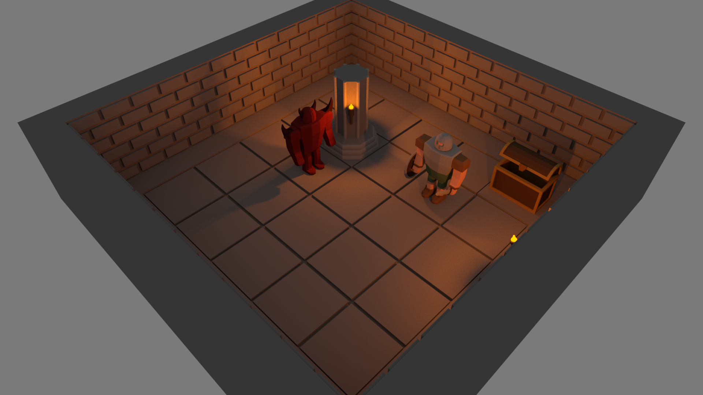

Home | Browse Projects | Contact Me
Heroes Quest
Overview
Heroes Quest is a turn-based, role-playing game where the player controls a party of four heroes as they battle enemies and embark on quests. The game takes place in an open world setting constructed from a grid of prefabricated tiles which form the board upon which the player’s characters are placed.
The player must move their characters around the world, interacting with the games inhabitants to obtain quests. Each character has a limited health, mana and a set of abilities to use in battle. Combat takes a turn-based approach where the player and enemy each take goes to move their characters and cast abilities on their foes. If a characters health drops to zero they permanently die, if all the player’s heroes die then the game is over.
The development of this game required large amounts of research into previous games of the genre and potential engines to program it in. The Unity engine was chosen for its ease of use and comprehensive API. From this research a set of requirements were drawn up that described the minimum feature set needed to accurately convey the games core concept.
The design stage involved the creation of 3D models to visualise the game which quickly progressed into the implementation of the key systems and features. At the conclusion of which user testing was carried out to gauge how successful the project had been. While still containing several minor bugs and glitches the game meets all core requirements, being described as “fun and enjoyable” by users and is consisted a successful attempt to convey the projects main concept.
Media & Screenshots
Here are a couple of videos of the game in action.
Initial concept artwork for the game.

A visualisation of the games pathfinding system.

A wizard character casting the fireball ability.

Download
If you would like to browse the project source code for yourself you can download the Unity3D project from the link below.
Heroes Quest Repository